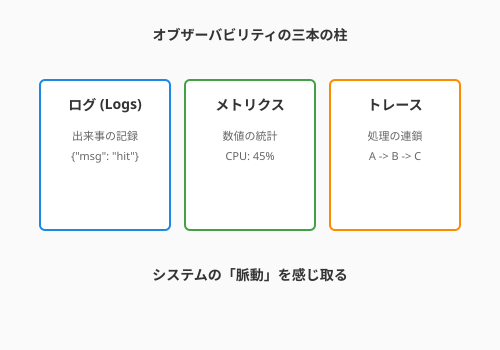

6.4 脈動を聴く——オブザーバビリティ
あなたが丹精込めて作り上げたソフトウェアは、本番環境という大海原で元気に動いているでしょうか？
「サーバーは動いている（死んでいない）」というだけでは不十分です。 QuestForgeに多くの冒険者が集まり始めたとき、彼らは快適にクエストに挑めているでしょうか？「なんだか最近、村の掲示板（アプリ）の表示が重い気がする……」という微かな不満の声が聞こえてきたとき、あなたはその原因を即座に突き止められるでしょうか。
暗闇の中で手探りするのではなく、システムの内部状態を手に取るように理解すること。それは、錬金術師が釜の中の温度や圧力を一目で把握する「水晶玉」を持つようなものです。この魔法を、私たちはオブザーバビリティ（可観測性）と呼びます。
4.6節で学んだ構造化ログやデバッグの技法は、開発中の「原因究明」に力を発揮しました。ここでは、その視野を本番環境に広げ、稼働中のシステムの健康状態を継続的に把握するための仕組みを学びます。
モニタリング vs オブザーバビリティ
かつての「監視（Monitoring）」は、主に「死活監視」でした。「心臓が止まったらアラートを鳴らす」というものです。これは重要ですが、心臓が止まってからでは手遅れなこともあります。
これに対し可観測性（Observability）は、「なぜ、その状態になっているのか？」という問いに、外部からの観察だけで答えを出す能力を指します。 システムの健康状態を、単なる「生存確認」ではなく、「脈動」として感じ取り、予兆を察知したり、複雑な原因を特定したりすることを目指します。
次の図は、オブザーバビリティを支える三本の柱——ログ・メトリクス・トレース——の関係を示しています。

ここで示されているのは、それぞれが「点・面・線」として機能する三種の神器です。ログは「いつ何が起きたか」という点の記録、メトリクスは「システム全体の傾向」という面の把握、そしてトレースは「一つのリクエストがどこを経由したか」という処理の旅路を線として描きます。この三つを組み合わせることで、システムの内部状態を透明なガラス越しに見通す「水晶玉」が完成します。
オブザーバビリティの三種の神器
システムの内面を知るために、私たちは3つの手がかり（テレメトリデータ）を使います。これらは「点・面・線」の関係に例えることができます。
1. ログ (Logs): 過去の記憶（点）
「何時何分、何が起きたか」を記した日記です。 「英雄アーサーがドラゴン討伐クエストを受注した」といった具体的な出来事を記録します。
# QuestForgeでの構造化ログの例
import logging
import json
logger = logging.getLogger("questforge")
def log_quest_start(hero_name, quest_id):
# 単なるテキストではなく、後で検索しやすい構造（JSON）で出力するのが現代流
log_data = {
"event": "quest_started",
"hero": hero_name,
"quest_id": quest_id,
"status": "success"
}
logger.info(json.dumps(log_data))2. メトリクス (Metrics): 健康のバロメータ（面・傾向）
ログが「何が起きたか」という点の記録だとすれば、メトリクスはシステム全体の傾向を俯瞰する「面」です。システムの状態を数値化した統計情報です。 「1秒間に何件のクエストが作成されているか」「メモリの空き容量はあとどれくらいか」といった、全体の傾向を一目で把握できます。ダッシュボードに描かれるグラフは、まさにシステムのバイタルサインです。
3. トレース (Traces): 処理の旅路（線）
点と面に続く「線」は、一つのリクエストがシステムの中をどう旅したかを追うトレースです。一つのリクエストが、複数の関数やデータベース、外部APIをどう渡り歩いたかを示す記録です。 「ユーザーがボタンを押してから画面が出るまでの2秒間、どの呪文（関数）の詠唱に時間がかかっていたか」を視覚化します。複数のサービスが連携する現代のシステムでは、ボトルネック（渋滞箇所）を見つける最強の武器となります。
SLIとSLO: ユーザーの幸せを数値化する
システムの声を聴くだけでなく、「どれくらい健康なら合格か？」という目標を立てることも重要です。
- SLI (Service Level Indicator): 指標。「クエスト一覧が1秒以内に表示されたリクエストの割合」など、具体的な測定値。
- SLO (Service Level Objective): 目標。「SLIが99.9%以上であること」といった、私たちが守りたい約束。
SLOを設定すると、そこから「どれだけ失敗を許容できるか」という逆転の発想が生まれます。
勇気を与える「エラーバジェット」
SLOを逆算すると、「エラーバジェット（エラーの予算）」という面白い概念が生まれます。 例えばSLOが99%なら、1%分は「失敗してもいい時間」です。
「まだ予算がたっぷり残っているから、少し冒険して新しい機能をリリースしてみよう！」 「予算が底をつきそうだから、今は機能開発を止めて、システムの補強（リファクタリング）に専念しよう」
エラーバジェットは、開発チームに「失敗を恐れずに挑戦する自由」と「科学的な守りの判断基準」を与えてくれるのです。
AI時代のアプローチ：脈動を読み解く賢者
現代のシステムから溢れ出すテレメトリデータは膨大です。人間がすべてのログを読み、すべてのグラフを監視し続けるのは不可能です。ここでAIが「賢者（Familiar）」として活躍します。
AIによる異常検知
その賢者の最初の得意技は、人間が気づかないような微かな変化を先回りして察知することです。「いつもより、ほんの少しだけデータベースの応答が遅れている。これは数時間後に大きな障害になる予兆だ」 AIは人間が気づかないような微かな変化を察知し、先回りして教えてくれます。
ログの要約と分析
「過去1時間で発生した10万件のログを分析した結果、根本的な原因はこの1行の呪文のミスにあります」 膨大な記憶（ログ）の中から、真実を瞬時に見つけ出す作業をAIに任せることで、私たちは「解決策」を考えることに集中できます。
まとめ
オブザーバビリティとは、システムの中身を「ブラックボックス」にせず、外からの観察だけで「なぜその状態なのか」を説明できる能力です。ログ（点）・メトリクス（面）・トレース（線）の三種の神器を組み合わせることで、システムの脈動は手に取るように感じ取れるようになります。単なる死活監視を超え、微かな予兆を察知し、複雑な連鎖の中からボトルネックを特定できる「水晶玉」が手に入ります。
SLIとSLOでユーザーの幸福を数値化し、エラーバジェットという概念で攻めと守りの科学的なバランスを取ることが、成熟したチームの証です。AIは膨大なテレメトリデータから異常の予兆や根本原因を瞬時に見つけ出す賢者として機能し、私たちは「解決策を考えること」に集中できます。オブザーバビリティが整ったシステムは、透明なガラスで作られた時計のように、内部の歯車の動きがすべて見えます——その鼓動を聴きながら、自信を持ってQuestForgeを成長させていきましょう。
6.5節では、こうして観察できるようになったシステムに、さらに「逆境への耐性」を与えるレジリエンスの技法へと進みます。Circuit Breakerやカオスエンジニアリングで、予期せぬ嵐にも揺るぎない生命力を宿らせましょう。
AIへの詠唱例
この節で学んだことを実践するためのプロンプト：
あなたは経験豊富なSRE（サイトリライアビリティエンジニア）です。
Pythonで書かれた「QuestForge」というタスク管理アプリに、
Prometheus形式のメトリクスを仕込むためのサンプルコードを書いてください。
特に「クエスト完了までにかかった時間（Histogram）」と「現在の同時接続ユーザー数（Gauge）」の
2点を計測したいです。以下のSLO設定について、1ヶ月（30日）あたりの「エラーバジェット（許容される停止時間）」を計算し、
開発チームがどのようにその予算を使うべきか、ポジティブなアドバイスをしてください。
- ターゲットSLO: 99.9%（可用性）さらに学ぶためのリソース
- 🌐 Web: Google SRE - Books（Googleが公開しているSRE関連の書籍。すべての章がWebで閲覧可能です）
- 📚 書籍: Niall Richard Murphy et al.『SRE サイトリライアビリティエンジニアリング ―実装編』（理論編を補完する、より具体的なプラクティスと事例集）
- 🌐 Web: SRE Workbook - Implementing SLOs（サービスレベル目標（SLO）をいかに設計し、実装するかのステップバイステップガイド）
- 📄 論文: S. Lawrence et al. "Practical Service Level Objectives" (2018)（実務で使えるSLOの定義と運用のポイントを解説した論文）